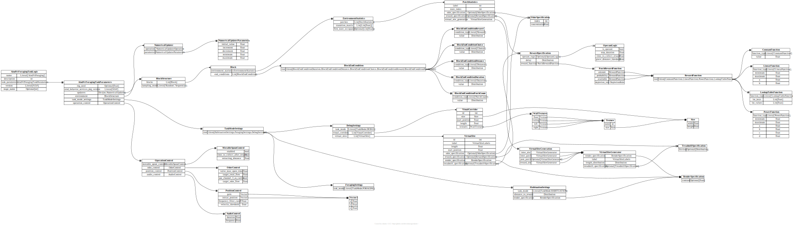

api.task_logic¶
{kind=link}
- pydantic model aind_behavior_vr_foraging.task_logic.AindVrForagingTaskLogic[source]¶
Bases:
AindBehaviorTaskLogicModel- Config:
extra: str = forbid
validate_assignment: bool = True
validate_default: bool = True
strict: bool = True
str_strip_whitespace: bool = True
- Fields:
- Validators:
coerce_version»version
- field task_parameters: AindVrForagingTaskParameters [Required][source]¶
Parameters of the task logic
- pydantic model aind_behavior_vr_foraging.task_logic.AindVrForagingTaskParameters[source]¶
Bases:
TaskParameters- Config:
extra: str = allow
validate_assignment: bool = True
validate_default: bool = True
strict: bool = True
str_strip_whitespace: bool = True
- Fields:
- Validators:
- field environment: BlockStructure [Required][source]¶
Statistics of the environment
- field operation_control: OperationControl [Required][source]¶
Control of the operation
- field task_mode_settings: TaskModeSettings = ForagingSettings(task_mode=<TaskMode.FORAGING: 'FORAGING'>)[source]¶
Settings of the task stage
- field updaters: Dict[str, NumericalUpdater] [Optional][source]¶
List of numerical updaters
- pydantic model aind_behavior_vr_foraging.task_logic.Block[source]¶
Bases:
BaseModel- Fields:
- field end_conditions: List[BlockEndCondition] = [][source]¶
List of end conditions that must be true for the block to end.
- field environment_statistics: EnvironmentStatistics [Required][source]¶
Statistics of the environment
- pydantic model aind_behavior_vr_foraging.task_logic.BlockEndConditionChoice[source]¶
Bases:
_BlockEndConditionBase
- pydantic model aind_behavior_vr_foraging.task_logic.BlockEndConditionDistance[source]¶
Bases:
_BlockEndConditionBase
- pydantic model aind_behavior_vr_foraging.task_logic.BlockEndConditionDuration[source]¶
Bases:
_BlockEndConditionBase
- pydantic model aind_behavior_vr_foraging.task_logic.BlockEndConditionPatchCount[source]¶
Bases:
_BlockEndConditionBase
- pydantic model aind_behavior_vr_foraging.task_logic.BlockEndConditionReward[source]¶
Bases:
_BlockEndConditionBase
- pydantic model aind_behavior_vr_foraging.task_logic.BlockStructure[source]¶
Bases:
BaseModel- Fields:
- pydantic model aind_behavior_vr_foraging.task_logic.DebugSettings[source]¶
Bases:
TaskModeSettingsBaseThis class is not currently implemented
- Fields:
- field virtual_sites: List[VirtualSite] [Required][source]¶
- field visual_corridors: List[VisualCorridor] [Required][source]¶
- class aind_behavior_vr_foraging.task_logic.DepletionRule(value, names=None, *, module=None, qualname=None, type=None, start=1, boundary=None)[source]¶
Bases:
str,Enum
- pydantic model aind_behavior_vr_foraging.task_logic.EnvironmentStatistics[source]¶
Bases:
BaseModel- Fields:
- field first_state_occupancy: List[NonNegativeFloat] | None = None[source]¶
Determines the first state the animal will be in. If null, it will be randomly drawn.
- field patches: List[PatchStatistics] [Optional][source]¶
List of patches
- Constraints:
min_length = 1
- pydantic model aind_behavior_vr_foraging.task_logic.ForagingSettings[source]¶
Bases:
TaskModeSettingsBase
- pydantic model aind_behavior_vr_foraging.task_logic.HabituationSettings[source]¶
Bases:
TaskModeSettingsBase- Fields:
- field distance_to_reward: distributions.Distribution [Required][source]¶
Distance (cm) to the reward
- field render_specification: RenderSpecification = RenderSpecification(contrast=None)[source]¶
The optional render specification of the virtual site
- pydantic model aind_behavior_vr_foraging.task_logic.LinearFunction[source]¶
Bases:
BaseModel- Fields:
- pydantic model aind_behavior_vr_foraging.task_logic.LookupTableFunction[source]¶
Bases:
BaseModel- Fields:
- Validators:
_validate_lut»all fields
- field function_type: Literal['LookupTableFunction'] = 'LookupTableFunction'[source]¶
- Validated by:
_validate_lut
- pydantic model aind_behavior_vr_foraging.task_logic.MovableSpoutControl[source]¶
Bases:
BaseModel
- pydantic model aind_behavior_vr_foraging.task_logic.NumericalUpdater[source]¶
Bases:
BaseModel- Fields:
- field operation: NumericalUpdaterOperation = NumericalUpdaterOperation.NONE[source]¶
Operation to perform on the parameter
- field parameters: NumericalUpdaterParameters = NumericalUpdaterParameters(initial_value=0.0, increment=0.0, decrement=0.0, minimum=0.0, maximum=0.0)[source]¶
Parameters of the updater
- class aind_behavior_vr_foraging.task_logic.NumericalUpdaterOperation(value, names=None, *, module=None, qualname=None, type=None, start=1, boundary=None)[source]¶
Bases:
str,Enum
- pydantic model aind_behavior_vr_foraging.task_logic.NumericalUpdaterParameters[source]¶
Bases:
BaseModel
- pydantic model aind_behavior_vr_foraging.task_logic.OdorControl[source]¶
Bases:
BaseModel- Fields:
- field target_odor_flow: float = 100[source]¶
Target odor flow (ml/s) in the odor mixture
- Constraints:
ge = 0
le = 100
- pydantic model aind_behavior_vr_foraging.task_logic.OdorSpecification[source]¶
Bases:
BaseModel- Fields:
- pydantic model aind_behavior_vr_foraging.task_logic.OperantLogic[source]¶
Bases:
BaseModel- Fields:
- field grace_distance_threshold: float = 10[source]¶
Virtual distance (cm) the animal must be within to not abort the current choice
- Constraints:
ge = 0
- pydantic model aind_behavior_vr_foraging.task_logic.OperationControl[source]¶
Bases:
BaseModel- Fields:
- field audio_control: AudioControl = AudioControl(duration=0.2, frequency=1000)[source]¶
Control of the audio
- field movable_spout_control: MovableSpoutControl = MovableSpoutControl(enabled=False, time_to_collect_after_reward=1, retracting_distance=0)[source]¶
Control of the movable spout
- field odor_control: OdorControl = OdorControl(valve_max_open_time=10, target_total_flow=1000, use_channel_3_as_carrier=True, target_odor_flow=100)[source]¶
Control of the odor
- field position_control: PositionControl = PositionControl(gain=Vector3(x=1.0, y=1.0, z=1.0), initial_position=Vector3(x=0.0, y=2.56, z=0.0), frequency_filter_cutoff=0.5, velocity_threshold=1)[source]¶
Control of the position
- pydantic model aind_behavior_vr_foraging.task_logic.PatchRewardFunction[source]¶
Bases:
BaseModel- Fields:
- field amount: RewardFunction = ConstantFunction(function_type='ConstantFunction', value=1.0)[source]¶
Determines the amount of reward to be delivered. The value is in microliters
- field available: RewardFunction = LinearFunction(function_type='LinearFunction', minimum=0.0, maximum=9999, a=-1.0, b=5.0)[source]¶
Determines the total amount of reward available left in the patch. The value is in microliters
- field depletion_rule: DepletionRule = DepletionRule.ON_CHOICE[source]¶
Depletion
- field probability: RewardFunction = ConstantFunction(function_type='ConstantFunction', value=1.0)[source]¶
Determines the probability that a reward will be delivered
- pydantic model aind_behavior_vr_foraging.task_logic.PatchStatistics[source]¶
Bases:
BaseModel- Fields:
- field odor_specification: OdorSpecification | None = None[source]¶
The optional odor specification of the patch
- field reward_specification: RewardSpecification | None = None[source]¶
The optional reward specification of the patch
- field virtual_site_generation: VirtualSiteGeneration = VirtualSiteGeneration(inter_site=VirtualSiteGenerator(render_specification=RenderSpecification(contrast=None), label=<VirtualSiteLabels.INTERSITE: 'InterSite'>, length_distribution=Scalar(family=<DistributionFamily.SCALAR: 'Scalar'>, distribution_parameters=ScalarDistributionParameter(family=<DistributionFamily.SCALAR: 'Scalar'>, value=20.0), truncation_parameters=None, scaling_parameters=None), treadmill_specification=None), inter_patch=VirtualSiteGenerator(render_specification=RenderSpecification(contrast=None), label=<VirtualSiteLabels.INTERPATCH: 'InterPatch'>, length_distribution=Scalar(family=<DistributionFamily.SCALAR: 'Scalar'>, distribution_parameters=ScalarDistributionParameter(family=<DistributionFamily.SCALAR: 'Scalar'>, value=20.0), truncation_parameters=None, scaling_parameters=None), treadmill_specification=None), post_patch=None, reward_site=VirtualSiteGenerator(render_specification=RenderSpecification(contrast=None), label=<VirtualSiteLabels.REWARDSITE: 'RewardSite'>, length_distribution=Scalar(family=<DistributionFamily.SCALAR: 'Scalar'>, distribution_parameters=ScalarDistributionParameter(family=<DistributionFamily.SCALAR: 'Scalar'>, value=20.0), truncation_parameters=None, scaling_parameters=None), treadmill_specification=None))[source]¶
Virtual site generation specification
- pydantic model aind_behavior_vr_foraging.task_logic.PositionControl[source]¶
Bases:
BaseModel- Fields:
- field frequency_filter_cutoff: float = 0.5[source]¶
Cutoff frequency (Hz) of the low-pass filter used to filter the velocity signal.
- Constraints:
ge = 0
le = 100
- pydantic model aind_behavior_vr_foraging.task_logic.PowerFunction[source]¶
Bases:
BaseModel- Fields:
- pydantic model aind_behavior_vr_foraging.task_logic.RenderSpecification[source]¶
Bases:
BaseModel- Fields:
- pydantic model aind_behavior_vr_foraging.task_logic.RewardSpecification[source]¶
Bases:
BaseModel- Fields:
- field delay: distributions.Distribution = Scalar(family=<DistributionFamily.SCALAR: 'Scalar'>, distribution_parameters=ScalarDistributionParameter(family=<DistributionFamily.SCALAR: 'Scalar'>, value=0.0), truncation_parameters=None, scaling_parameters=None)[source]¶
The optional distribution where the delay to reward will be drawn from
- field operant_logic: OperantLogic | None = None[source]¶
The optional operant logic of the reward
- field reward_function: PatchRewardFunction = PatchRewardFunction(amount=RewardFunction(root=ConstantFunction(function_type='ConstantFunction', value=1.0)), probability=RewardFunction(root=ConstantFunction(function_type='ConstantFunction', value=1.0)), available=RewardFunction(root=LinearFunction(function_type='LinearFunction', minimum=0.0, maximum=9999, a=-1.0, b=5.0)), depletion_rule=<DepletionRule.ON_CHOICE: 'OnChoice'>)[source]¶
Reward function of the patch.
- class aind_behavior_vr_foraging.task_logic.TaskMode(value, names=None, *, module=None, qualname=None, type=None, start=1, boundary=None)[source]¶
Bases:
str,Enum
- pydantic model aind_behavior_vr_foraging.task_logic.TreadmillSpecification[source]¶
Bases:
BaseModel- Fields:
- pydantic model aind_behavior_vr_foraging.task_logic.VirtualSite[source]¶
Bases:
BaseModel- Fields:
label (aind_behavior_vr_foraging.task_logic.VirtualSiteLabels)odor_specification (aind_behavior_vr_foraging.task_logic.OdorSpecification | None)render_specification (aind_behavior_vr_foraging.task_logic.RenderSpecification)reward_specification (aind_behavior_vr_foraging.task_logic.RewardSpecification | None)treadmill_specification (aind_behavior_vr_foraging.task_logic.TreadmillSpecification | None)
- field label: VirtualSiteLabels = VirtualSiteLabels.UNSPECIFIED[source]¶
Label of the virtual site
- field odor_specification: OdorSpecification | None = None[source]¶
The optional odor specification of the virtual site
- field render_specification: RenderSpecification = RenderSpecification(contrast=None)[source]¶
The optional render specification of the virtual site
- field reward_specification: RewardSpecification | None = None[source]¶
The optional reward specification of the virtual site
- field start_position: float = 0[source]¶
Start position of the virtual site (cm)
- Constraints:
ge = 0
- field treadmill_specification: TreadmillSpecification | None = None[source]¶
Treadmill specification
- pydantic model aind_behavior_vr_foraging.task_logic.VirtualSiteGeneration[source]¶
Bases:
BaseModel- Fields:
- field inter_patch: VirtualSiteGenerator = VirtualSiteGenerator(render_specification=RenderSpecification(contrast=None), label=<VirtualSiteLabels.INTERPATCH: 'InterPatch'>, length_distribution=Scalar(family=<DistributionFamily.SCALAR: 'Scalar'>, distribution_parameters=ScalarDistributionParameter(family=<DistributionFamily.SCALAR: 'Scalar'>, value=20.0), truncation_parameters=None, scaling_parameters=None), treadmill_specification=None)[source]¶
Generator of the inter-patch virtual sites
- field inter_site: VirtualSiteGenerator = VirtualSiteGenerator(render_specification=RenderSpecification(contrast=None), label=<VirtualSiteLabels.INTERSITE: 'InterSite'>, length_distribution=Scalar(family=<DistributionFamily.SCALAR: 'Scalar'>, distribution_parameters=ScalarDistributionParameter(family=<DistributionFamily.SCALAR: 'Scalar'>, value=20.0), truncation_parameters=None, scaling_parameters=None), treadmill_specification=None)[source]¶
Generator of the inter-site virtual sites
- field post_patch: VirtualSiteGenerator | None = None[source]¶
Generator of the post-patch virtual sites
- field reward_site: VirtualSiteGenerator = VirtualSiteGenerator(render_specification=RenderSpecification(contrast=None), label=<VirtualSiteLabels.REWARDSITE: 'RewardSite'>, length_distribution=Scalar(family=<DistributionFamily.SCALAR: 'Scalar'>, distribution_parameters=ScalarDistributionParameter(family=<DistributionFamily.SCALAR: 'Scalar'>, value=20.0), truncation_parameters=None, scaling_parameters=None), treadmill_specification=None)[source]¶
Generator of the reward-site virtual sites
- pydantic model aind_behavior_vr_foraging.task_logic.VirtualSiteGenerator[source]¶
Bases:
BaseModel- Fields:
- field label: VirtualSiteLabels = VirtualSiteLabels.UNSPECIFIED[source]¶
Label of the virtual site
- field length_distribution: distributions.Distribution = Scalar(family=<DistributionFamily.SCALAR: 'Scalar'>, distribution_parameters=ScalarDistributionParameter(family=<DistributionFamily.SCALAR: 'Scalar'>, value=20.0), truncation_parameters=None, scaling_parameters=None)[source]¶
Distribution of the length of the virtual site
- field render_specification: RenderSpecification = RenderSpecification(contrast=None)[source]¶
Contrast of the environment
- field treadmill_specification: TreadmillSpecification | None = None[source]¶
Treadmill specification
- class aind_behavior_vr_foraging.task_logic.VirtualSiteLabels(value, names=None, *, module=None, qualname=None, type=None, start=1, boundary=None)[source]¶
Bases:
str,Enum
- pydantic model aind_behavior_vr_foraging.task_logic.VisualCorridor[source]¶
Bases:
BaseModel- Fields:
- field textures: WallTextures [Required][source]¶
The textures of the corridor